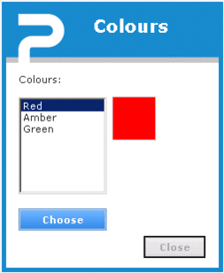
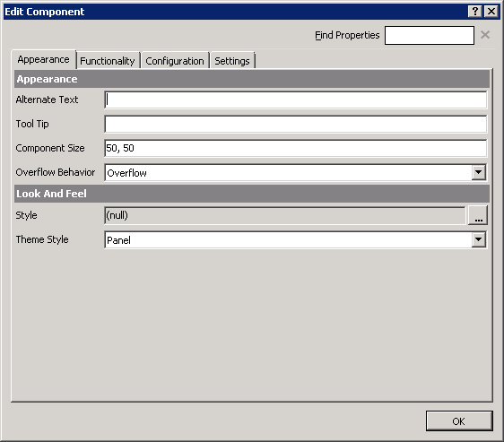
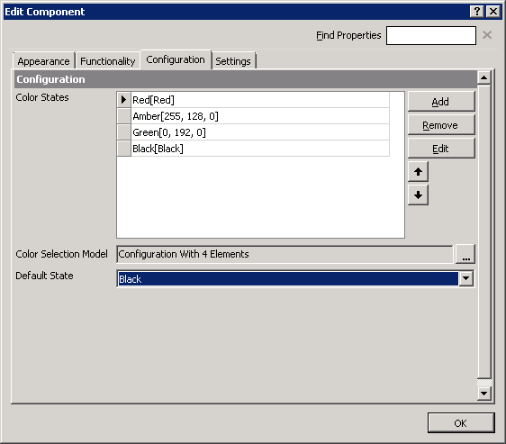
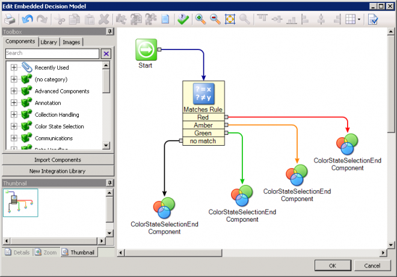
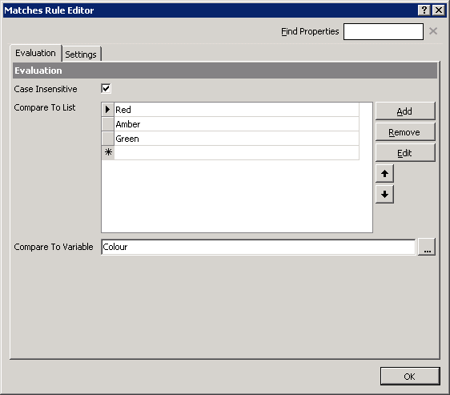
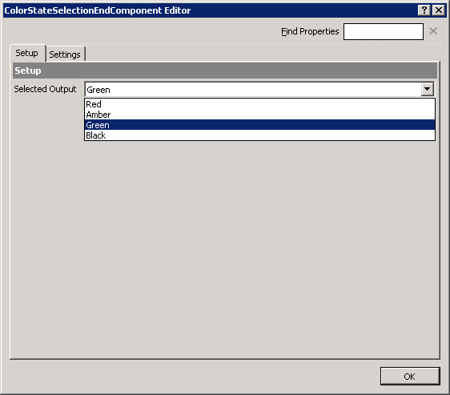
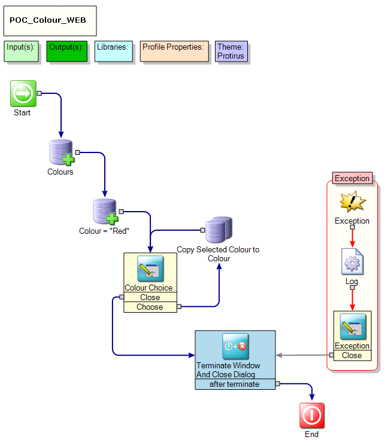
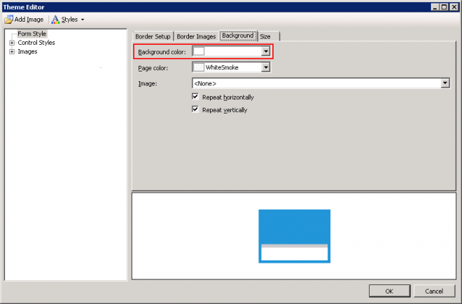

In this article I will show you how to use the 'MultiStateColor' component in the  Forms (Web) Project Type
Forms (Web) Project Type
This allows you to change a panel on a Web Form to a specific colour.
This can be handy for a RAG Status or Traffic light system.
In a Form under Dashboard Components there is:
MultiStateColor
| Class: | LogicBase.Components.FormBuilder.Components.MultiStateColor.MultiStateColorComponent |
|---|---|
| Library: | LogicBase.Components.FormBuilder.dll |
| Publisher: | Symantec Corporation |

Drag this onto your Form.
The Theme Style will be set to Panel.

Add in your 'Color States'
You can use the Color Picker here to choose a more accurate one.

Click on the "..." next to the 'Color Selection Model':
Add in a Matches rule that uses your variable to check - here being color:

Add you manual comparisons:

Duplicate your 'ColorStateSelectionEndComponent' and chose a Selected Output from the previously configured list.

Now you can run your Form and see the colour change accordingly.

Watch out when using a Theme
Change the Background to nothing or it doesn't work.

Original I tried 3 panels, one of each colour, with visibility rules given the matching value but this way gives more flexibility for more colour choices too.